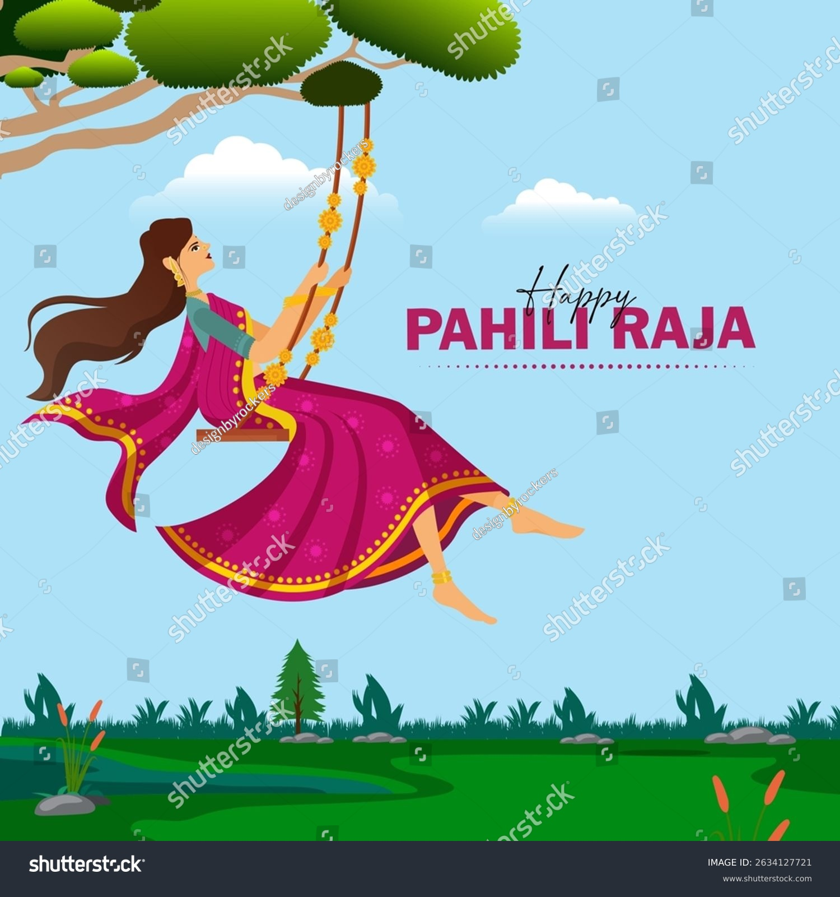
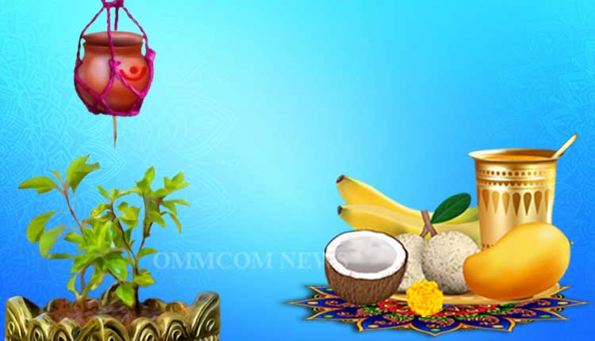
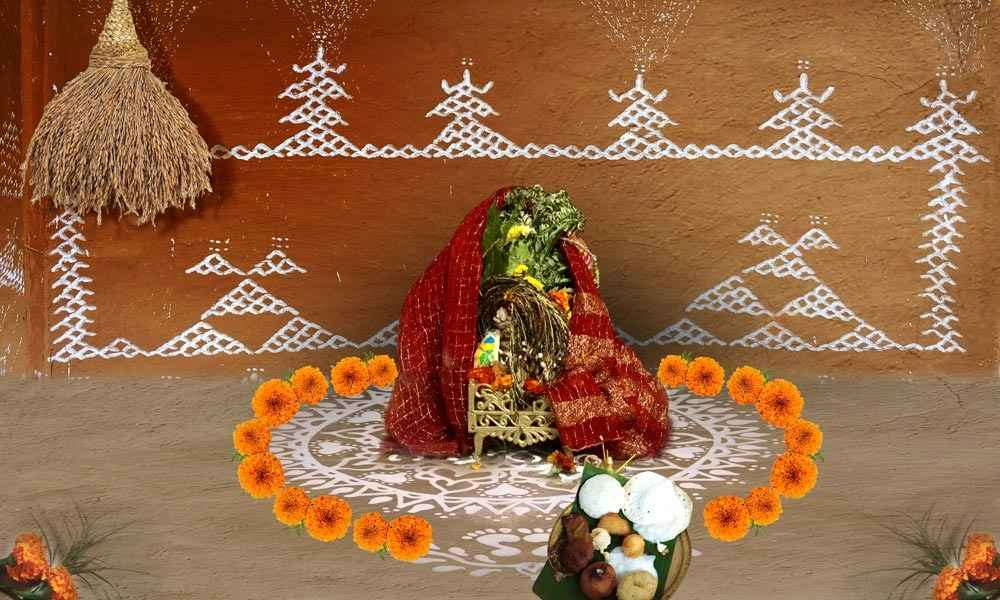

- Celebration of Womanhood & Earth’s Fertility – Raja Festival marks the onset of monsoon and celebrates menstruation as a symbol of fertility of both women and Mother Earth.
- Fun & Festive Activities – Girls wear new dresses, apply alta (red dye) on their feet, enjoy swings (doli), and play traditional games, while people relish special delicacies like Poda Pitha.
- Three-Day Festival – It lasts for three days: Pahili Raja, Raja Sankranti, and Basi Raja, during which agricultural activities are paused, symbolizing rest for Mother Earth.

- Welcoming the Odia New Year – Pana Sankranti, also called Maha Vishuba Sankranti, marks the beginning of the Odia New Year, usually celebrated on April 14th.
- Special Drink “Pana” – The festival is named after Pana, a refreshing traditional drink made with water, fruits, yogurt, jaggery, and bael (wood apple), offered to Lord Jagannath and shared among people to beat the summer heat.
- Religious & Cultural Significance – People visit temples, perform meru yatra and charity rituals, and in many places, Danda Jatra (a folk dance and ritual performance) is also associated with this festival.

- Worship of Goddess Lakshmi – Celebrated on Thursdays of the Hindu month of Margasira (November–December), women worship Goddess Lakshmi for prosperity, happiness, and well-being of the family.
- Mana (Measuring Basket) Ritual – A paddy-filled bamboo basket (mana) is decorated and placed in the house as a symbol of wealth, along with colorful jhoti/chita (rice paste designs) drawn on the floor.
- Cultural Belief – It is believed that Goddess Lakshmi visits clean and decorated homes on this day, so women keep their houses spotless and beautifully adorned.